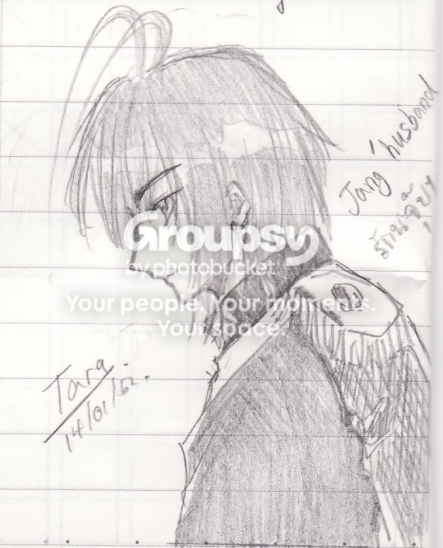
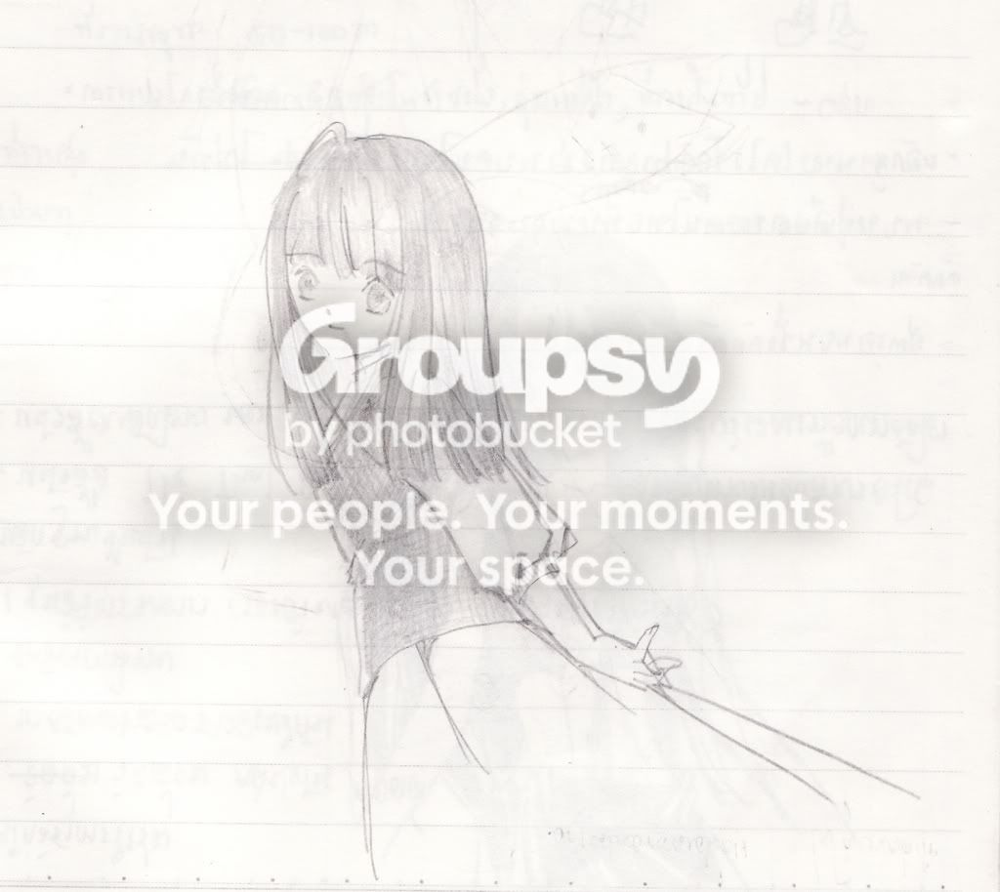

โอ้ววว ขอบคุณ คุณ_Berserk_มากๆค่ะ จริงๆชุดรุปแบบนี้วาดออกมาหลายแบบแหละค่ะ แต่ปัญหาคือ.. มันหายไปไหนฟร่ะ สงสัยแมงสาปแทะ โอ้ววโน๊วว
อ่า...จะว่าไปมันก้ไม่ได้รัดตัวขนาดนั้น แต่มันก็ไม่ว่างอ่าแหละค่ะ(เอ๊ะยังไง ชักจะงง)
เอิ่มๆๆๆ ช่างมันเตีอะค่ะ ช่วงนี้ความจำเลอะเลือน มั่วซั่วไปหมดเลย แหะๆ
วันนี้ก็ได้รูปที่ฝากเพื่อนแสกนแล้วหล่ะค่ะ( จริงๆได้เมื่อวานแต่ความขยันมันมากเกินไป - -")

รูปแรกนะค่ะ ใครเคยดูแสลมดั้งน่าจะพอเดาได้นะว่าหนุ่มน้อยคนนั้นเป็นใคร อิอิ (วาดได้ไม่อายฟ้าดินเลยช้านนT^T)
แล้วก็ รูปที่ 2 นะค่ะ อยากลองวาดผู้ชาย ก็ไม่ค่อยจะชายหรอกค่ะแต่คุณเพื่อนมันก็ยังอุตส่าห์จับจองซะแล้ว 55

เอาละค่ะรุปที่ สาม!! ก็ไม่มีอะไรหรอกค่ะ 555 (อีนี้มุกไม่ฮาพาคนเครียด)

สาวน้อยคนนี้เธอคือใคร....คนวาดเองก็ไม่รุ้ค่ะ - -" (มันจะพูดเพื่อ...)
เธอคนนี้ดูหมองๆไปนิดเนื่องจากวาดแล้วลบอีกแล้ววาด เอิ้กๆ จึงได้มาแบบภาพในหมอก โอ่ววว